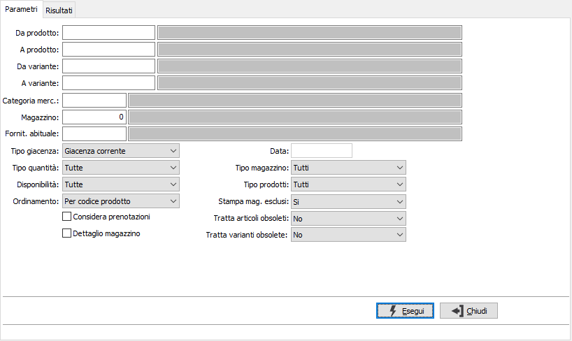
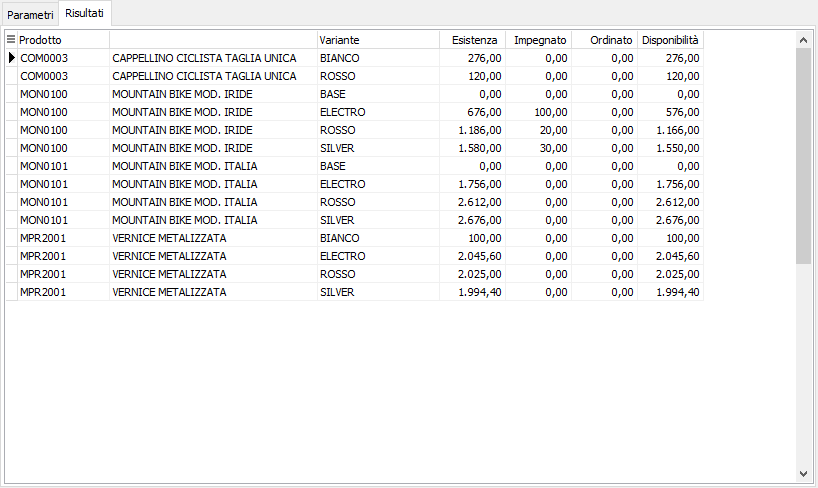

Analisi giacenze varianti
Il programma permette di visualizzare le giacenze complessive di una o più varianti. Per ciascuna variante viene visualizzata l’esistenza, la quantità impegnata da clienti, la quantità ordinata a fornitori e la conseguente disponibilità.
È possibile analizzare le giacenze alla data corrente oppure ad una qualsiasi data precedente, da indicare.
Se presente il modulo Liste di prelievo sarà possibile effettuare l'analisi delle giacenze considerando o meno le quantità prenotate.

DA PRODOTTO: codice articolo, da cui si desidera iniziare la selezione di analisi. Confermando a vuoto, la selezione inizia con il primo prodotto valido. Sul campo è attiva la ricerca (F9) sull’anagrafica prodotti.
A PRODOTTO: codice articolo, con cui si desidera terminare la selezione di analisi. Confermando a vuoto, la selezione termina con l’ultimo valido. Sul campo è attiva la ricerca (F9) sull’anagrafica prodotti.
DA VARIANTE: codice della variante, da cui si desidera iniziare la selezione di analisi. Confermando a vuoto, la selezione inizia con la prima variante valida. Sul campo è attiva la ricerca (F9) sull’anagrafica varianti.
A VARIANTE: codice della variante con cui si desidera terminare la selezione di analisi. Confermando a vuoto, la selezione termina con l’ultima variante valida. Sul campo è attiva la ricerca (F9) sull’anagrafica varianti.
CATEGORIA: codice della categoria merceologica a cui si vuole restringere la selezione di analisi. Sul campo è attiva la ricerca (F9) sulla tabella Categorie merceologiche.
MAGAZZINO: eventuale codice del magazzino a cui si vuole restringere la selezione di analisi. Confermando a vuoto, l’esistenza del prodotto si riferisce a tutti i magazzini. Sul campo è attiva la ricerca (F9) sulla tabella Magazzini.
FORNITORE ABITUALE: eventuale codice del fornitore abituale dei prodotti con cui si desidera effettuare la selezione dei prodotti. Sul campo è attiva la ricerca (F9) sull’anagrafica fornitori.
TIPO GIACENZA: combo box per definire i criteri di analisi per data. Valori ammessi: Giacenza corrente (visualizza le giacenze attuali delle varianti); Giacenza alla data (da indicare; visualizza le esistenze alla data indicata dall’utente).
DATA: data, conseguente alla richiesta di Giacenza alla data, a cui si desidera riferire la selezione.
TIPO QUANTITÀ: combo box per filtrare le esistenze negative. Valori ammessi: Tutte le esistenze; Esistenze diverse da 0; Solo esistenze negative.
DISPONIBILITÀ: combo box per restringere la selezione in base alla disponibilità del prodotto; valori possibili: tutte, uguale a zero, diversa da zero, positiva o negativa.
ORDINAMENTO PER: combo box per definire i criteri di ordinamento. Valori ammessi: Per prodotto; Per descrizione prodotto, Per Lotto.
CONSIDERA PRENOTAZIONI: definisce se visualizzare la giacenza netta, comprensiva delle prenotazioni (casella con segno di spunta) o quella lorda (casella vuota).
DETTAGLIO MAGAZZINI: check box per definire i criteri di visualizzazione in caso di presenza in più magazzini dello stesso prodotto. Valori ammessi: vuoto = visualizza il totale dei magazzini; spunta = visualizza analiticamente i singoli magazzini.
TIPO MAGAZZINO: combo box per definire la tipologia di magazzino da elaborare. Valori ammessi: tutti, di proprietà, di terzi.
TIPO PRODOTTI: combo box per definire la tipologia dei prodotti da elaborare. Valori ammessi: tutti, escluso prodotti fuori inventario, solo prodotti fuori inventario.
STAMPA MAGAZZINI ESCLUSI: indica se nella selezione si desidera i magazzini normalmente esclusi dalla stampa dell’inventario. Valori ammessi: No, Si, Solo esclusi.
TRATTA ARTICOLI OBSOLETI: definisce come e se includere nell'analisi anche gli articoli obsoleti: Si, No, Solo obsoleti.
TRATTA VARIANTI OBSOLETE: definisce come e se includere nell'analisi anche le varianti obsolete: Si, No, Solo obsoleti.
Confermando tramite pressione del bottone Selezione, vengono visualizzate nella linguetta Risultati le esistenze delle varianti selezionate; da questa sezione è possibile utilizzando i bottoni anteprima di stampa o stampa della tool bar, effettuare la stampa.
